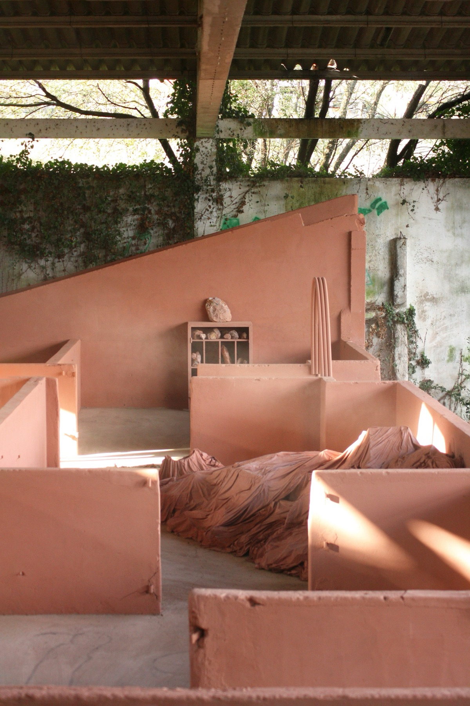
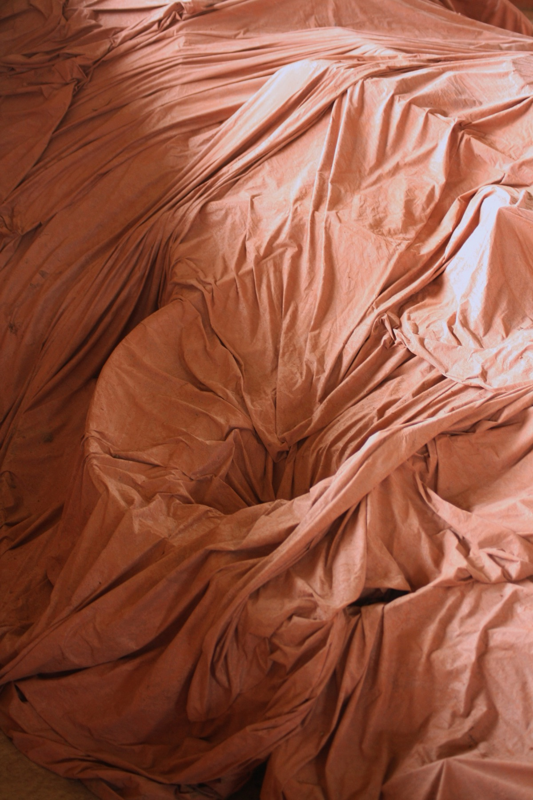
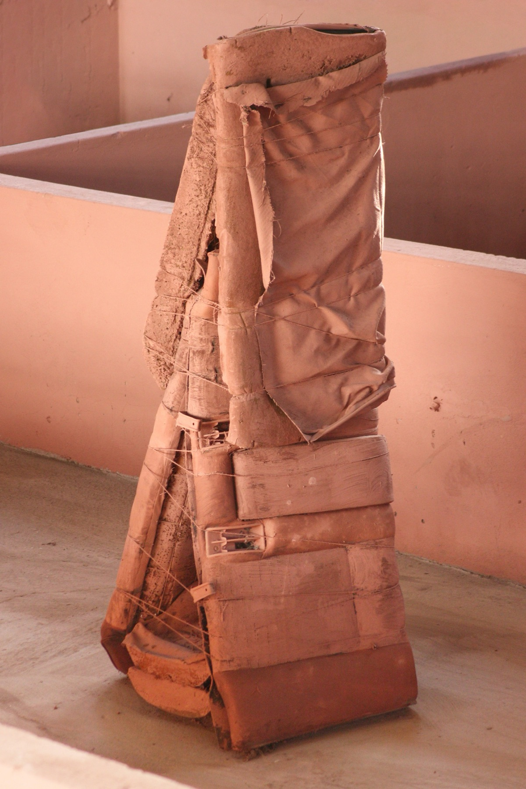
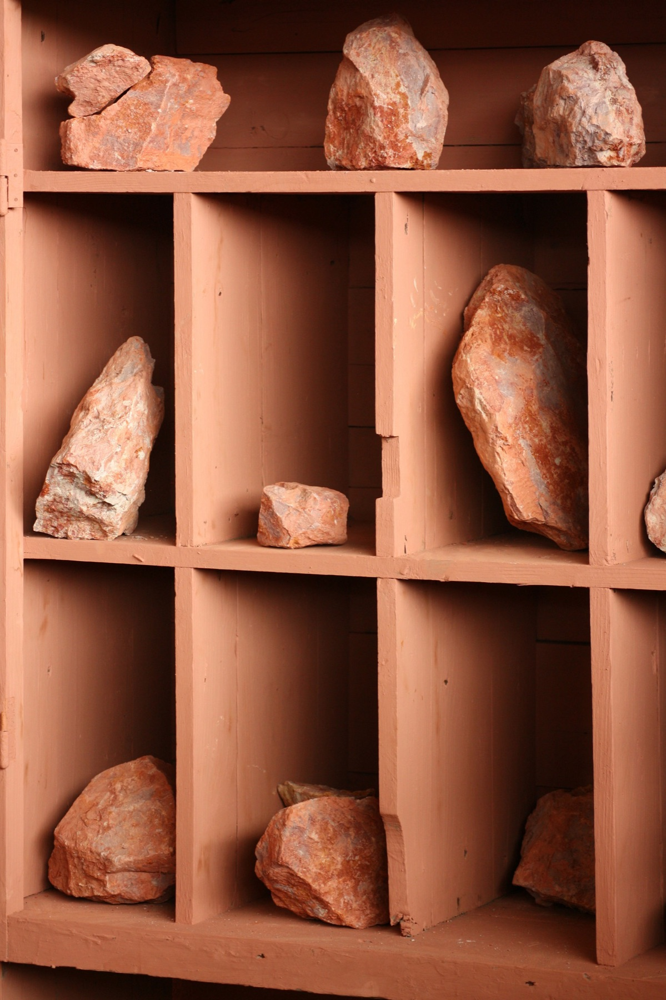
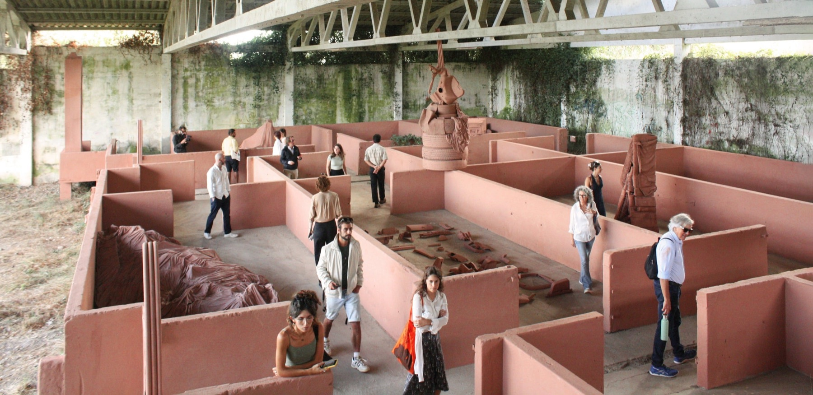
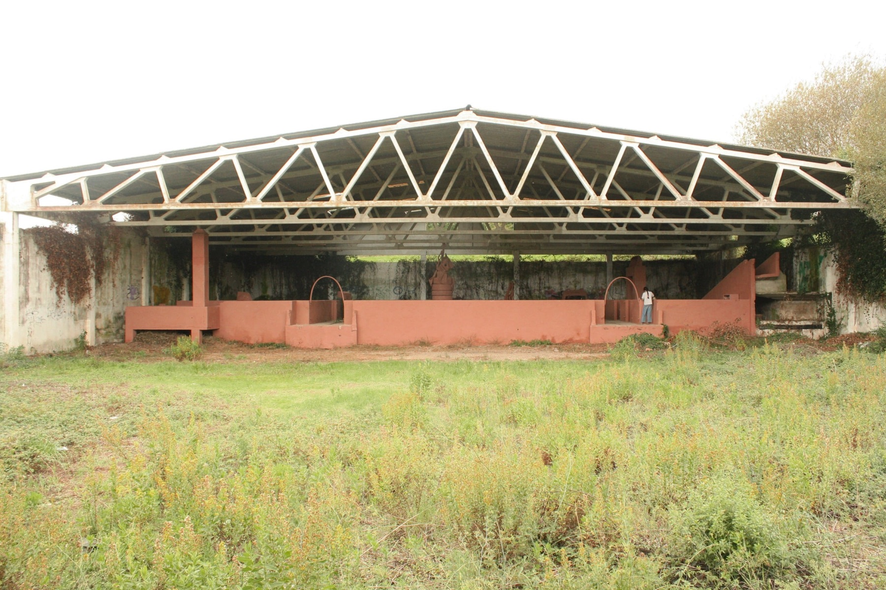

Obra2024
Tapalixo de abaixo

No sabemos cuándo se descubrió ni cuándo se construyó. Las únicas fechas que podremos afirmar es la del día en el que llegamos por primera vez, 25 de julio de 2024, y la de hoy, 12 de octubre de 2024. Porque una historia necesita tener al menos dos fechas para no ser tomada como ficción.
Preguntamos a los vecinos sobre su historia, pero la respuesta fue siempre la misma: “Eso está ahí desde que ahí lo dejaron”. Tengan por favor en consideración que a continuación leeremos únicamente nuestras hipótesis de lo que aquí encontramos. Este lugar nos ha permitido interrogar y hasta modificar el pasado, que ahora no es menos plástico y menos dócil que el porvenir.
Este espacio, como tantos otros, no existe si no venimos. Las cosas tienden a borrarse y a perder los detalles cuando los olvida la gente. A veces unos pájaros, un gato o un hombre con un apretón, han salvado las ruinas de un poblado.
- Materiales
- Arcilla salvaje km casi 0
- Plástico, metal, espuma, cartón encontrados
- Carrocería
- Cuerda
- Agradecimientos
- Ani, Nina, Nitish, Inês, Ana





